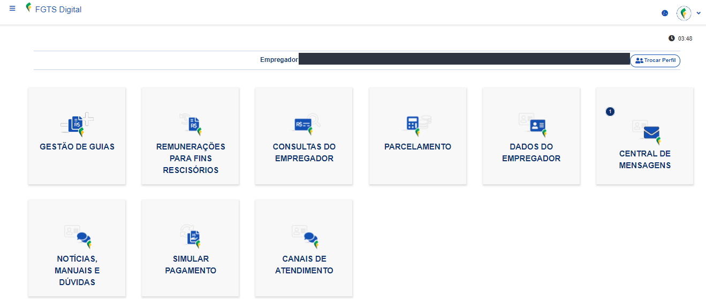

Designer de Experiência do Usuário especializado em pesquisa de usabilidade em sistemas de grande porte. Conduzo o ciclo completo, do diagnóstico do problema à validação com usuários, traduzindo evidência qualitativa e quantitativa em decisões estratégicas de produto.
User Experience Designer specialising in usability research on large-scale systems. I lead the full cycle, from diagnosing the problem to validating with users, turning qualitative and quantitative evidence into strategic product decisions.
PROJETO 02 · GOVERNO FEDERAL · 2023CASE STUDY 02 · FEDERAL GOVERNMENT · 2023
FGTS Digital
Análise da qualidade de uso do FGTS Digital, o sistema em que empregadores emitem guias, calculam a multa rescisória e parcelam débitos do FGTS. A pesquisa combinou análise heurística e sessões com 16 profissionais para descobrir onde o sistema atrapalha o trabalho de quem lida com folha de pagamento e departamento pessoal.
A quality-of-use analysis of FGTS Digital, the system where employers issue guides, calculate the severance penalty and pay FGTS debts in installments. The research combined heuristic analysis and sessions with 16 professionals to find where the system gets in the way of people who handle payroll and personnel administration.
O PROBLEMATHE PROBLEM
Com o sistema ainda em fase de testes, era preciso saber se quem hoje trabalha com o SEFIP consegue fazer as tarefas críticas no FGTS Digital sem tropeçar em obstáculos de navegação, de linguagem e de comunicação.With the system still in its testing phase, it was necessary to know whether people who work with SEFIP today can do the critical tasks in FGTS Digital without stumbling over obstacles of navigation, language and communication.
MEU PAPELMY ROLE
Especialista em Experiência do Usuário no Laboratório de Qualidade (LabQ), Secretaria de Governo Digital, Ministério da Gestão e da Inovação em Serviços Públicos. Atuei na pesquisa de usabilidade do FGTS Digital, que combinou análise heurística, entrevistas e grupo focal.UX Specialist at the Quality Lab (LabQ), Secretariat of Digital Government, Ministry of Management and Innovation in Public Services. I worked on the FGTS Digital usability research, which combined heuristic analysis, interviews and a focus group.
O ESCOPOTHE SCOPE
5 fluxos de uso analisados por duas fontes de evidência: análise heurística e pesquisa com 16 usuários (entrevistas e grupo focal), em setembro de 2023. O conteúdo das entrevistas foi analisado em seis categorias.5 usage flows analysed through two sources of evidence: heuristic analysis and research with 16 users (interviews and a focus group), in September 2023. The interview content was analysed in six categories.
O RESULTADOTHE OUTCOME
8 achados em destaque, cada um com a evidência da pesquisa e uma recomendação.8 highlighted findings, each with the research evidence and a recommendation.
01
O contextoThe context
O FGTS Digital é o sistema do FGTS para o empregador: nele se emitem guias de recolhimento (rápidas e parametrizadas), calcula-se a multa rescisória, parcelam-se débitos e consultam-se vínculos e guias.
FGTS Digital is the FGTS system for the employer: it is where collection guides are issued (quick and parameterized), the severance penalty is calculated, debts are paid in installments and employment bonds and guides are queried.
Quem o usa são profissionais de departamento pessoal, RH, contabilidade e sistemas de folha de empresas de grande porte, para contratações, rescisões, atualização de dados e controle dos depósitos dos funcionários. Num sistema de trabalho, cada tropeço custa tempo e abre espaço para erro em valores e prazos.
Its users are professionals in personnel administration, HR, accounting and payroll systems at large companies, for hiring, dismissals, data updates and control of employees’ deposits. In a work system, every stumble costs time and leaves room for errors in amounts and deadlines.
OS 5 FLUXOS ANALISADOSTHE 5 FLOWS ANALYSED

02
Como a pesquisa foi conduzidaHow the research was run
Duas fontes de evidência sobre os mesmos cinco fluxos: o que a análise heurística aponta e o que os usuários dizem e fazem.Two sources of evidence on the same five flows: what the heuristic analysis points out and what users say and do.
01
Análise heurísticaHeuristic analysis
Os fluxos foram percorridos tarefa a tarefa. Achados e hipóteses ficaram registrados, algumas marcadas para testar com usuários.The flows were walked through task by task. Findings and hypotheses were recorded, some marked to be tested with users.
02
Entrevistas e grupo focalInterviews and focus group
16 profissionais, em setembro de 2023. O roteiro cobria rotina, comparação com o SEFIP, facilidades, dificuldades, pedidos de melhoria e uma nota de 0 a 10.16 professionals, in September 2023. The script covered routine, comparison with SEFIP, what is easy, what is hard, improvement requests and a 0 to 10 score.
03
Análise de conteúdoContent analysis
Falas e observações classificadas em seis categorias, para separar opinião, elogio, observação dos pesquisadores, resposta neutra, navegação e linguagem.Statements and observations sorted into six categories, to separate opinion, praise, researcher observation, neutral answer, navigation and language.
04
ConsolidaçãoConsolidation
Os achados foram reunidos por fluxo num quadro de síntese, com a evidência de cada fonte e a recomendação correspondente.The findings were gathered by flow on a synthesis board, with the evidence from each source and the matching recommendation.
Limites. A pesquisa usou o sistema em fase de testes, com perfis de dados de teste. Nem todos os participantes tinham participado do período de testes, e uma sessão ocorreu sem navegação por falta de massa de dados.Limits. The research used the system in its testing phase, with test-data profiles. Not every participant had taken part in the testing period, and one session took place without navigation for lack of test data.
03
O que os participantes elogiaramWhat participants praised
Antes dos problemas, o ponto de partida: a recepção ao sistema foi positiva, com ressalvas.Before the problems, the starting point: the system was well received, with caveats.
NOTA DADA AO SISTEMA, DE 0 A 10SCORE GIVEN TO THE SYSTEM, 0 TO 10
14 notas, de 7 a 9,5, com mediana 8. Duas justificativas lembraram que o sistema ainda estava em testes ou que o participante o conhecia pouco.14 scores, from 7 to 9.5, with a median of 8. Two justifications noted that the system was still in testing or that the participant barely knew it.
Dados prontos, sem redigitarReady-made data, no retyping
“Ter os dados prontos, diferente da sefip, é o ponto mais positivo do FGTS DigitalHaving the data ready, unlike SEFIP, is the most positive point of FGTS Digital”
REGISTRO DA PESQUISARESEARCH RECORD
Menos etapas que no SEFIPFewer steps than in SEFIP
“Eliminarei 3 etapas do processo que realizo hoje com SEFIP com o simples acesso ao FGTS Digital.I will eliminate 3 steps of the process I perform today with SEFIP, simply by accessing FGTS Digital.”
REGISTRO DA PESQUISARESEARCH RECORD
Dois participantes falaram em cerca de três etapas a menos. Quatro apontaram a guia rápida como a tarefa mais fácil.Two participants spoke of about three fewer steps. Four named the quick guide as the easiest task.
O QUE AINDA FALTAVA, NAS PALAVRAS DELESWHAT WAS STILL MISSING, IN THEIR WORDS
Três participantes pediram integração por webservice ou API entre o sistema da empresa e o FGTS Digital. O código de barras na guia foi o pedido mais repetido (achado A5).Three participants asked for a webservice or API integration between the company’s system and FGTS Digital. A barcode on the guide was the most repeated request (finding A5).
04
Os achados em destaqueThe headline findings
Oito achados apareceram nas duas fontes: foram levantados na análise heurística e reencontrados nas sessões com usuários. Cada um traz a evidência, a recomendação e, quando houve, o contraponto.Eight findings showed up in both sources: they were raised in the heuristic analysis and found again in the sessions with users. Each one carries the evidence, the recommendation and, when there was one, the counterpoint.
por fluxoby flowOutros achados registrados no quadro de sínteseMore findings recorded on the synthesis board
GERALGENERAL
GUIAS E EXPORTAÇÃOGUIDES AND EXPORT
REMUNERAÇÕES PARA FINS RESCISÓRIOSREMUNERATIONS FOR SEVERANCE
PARCELAMENTO E CONSULTAS DO EMPREGADORINSTALLMENTS AND EMPLOYER QUERIES
05
Resultado e aprendizadoOutcome and takeaway
A pesquisa reuniu, por fluxo, os achados com a evidência de cada fonte e a recomendação correspondente. Os oito achados em destaque apareceram na análise heurística e foram reencontrados nas sessões com usuários.
The research gathered, by flow, the findings with the evidence from each source and the matching recommendation. The eight headline findings appeared in the heuristic analysis and were found again in the sessions with users.
Este case descreve o sistema em setembro de 2023, em fase de testes.
This case describes the system in September 2023, in its testing phase.
A heurística levanta a hipótese, o usuário a confirma ou a relativizaHeuristics raise the hypothesis, users confirm or qualify it
No pagamento por PIX e na Competência de Referência, a análise deixou a pergunta, e as sessões trouxeram respostas diferentes entre participantes.On PIX payment and on the Reference Period, the analysis left the question, and the sessions brought different answers across participants.
O contraponto faz parte do achadoThe counterpoint is part of the finding
Registrar quem discorda, como na tabela larga, no PIX e no CNPJ, evita recomendações que servem a um único perfil.Recording who disagrees, as on the wide table, PIX and the tax ID, avoids recommendations that serve a single profile.
A usabilidade vai além da telaUsability goes beyond the screen
O pagamento por PIX depende de contas, aprovações e rotinas de tesouraria das empresas: o que parece detalhe de interface é um processo de trabalho.Paying by PIX depends on companies’ accounts, approvals and treasury routines: what looks like an interface detail is a work process.